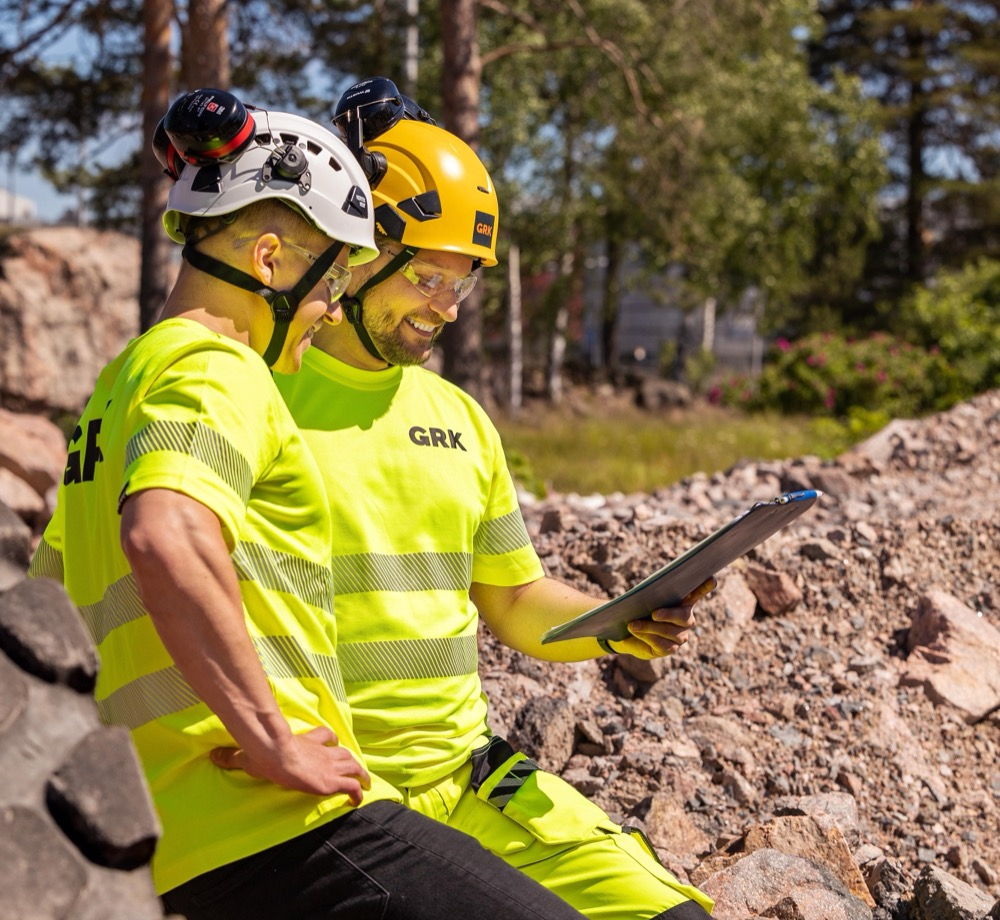

Suunnitteluyhteistyö: suunnittelija mukana käyttöönottoon asti
Olemme mukana jo ennen kuin suunnitelma lyödään lukkoon, ja suunnittelu jatkuu työmaalla, kun jokin muuttuu.
Kenelle suunnitteluyhteistyö sopii
Rakennuttaja ja hankeomistaja
Kuka vastaa, kun suunnitelma ja työmaa eivät kohtaa?
KVR-urakassa (kokonaisvastuurakentaminen) GRK vastaa sekä suunnittelusta että toteutuksesta, ja sinä määrittelet lopputuloksen. ST-urakassa (suunnittele ja toteuta) teemme toteutussuunnittelun yhdessä suunnittelijasi kanssa.
Suunnittelija ja suunnittelutoimisto
Sopiiko menetelmä suunnitelmaan, ja mikä on edullisin tapa toteuttaa se?
Voit tarkistaa menetelmän suoraan asiantuntijalta ennen kuin viet sen suunnitelmaan. Puolivalmiskin suunnitelma käy.
Väylävirasto, kaupunki tai kunta
Miten tilaaja, suunnittelijat ja rakentaja saadaan samaan suuntaan?
Allianssissa tilaaja, suunnittelijat ja GRK muodostavat yhteisen organisaation ja jakavat tavoitteet ja riskit. Hailuodon allianssissa yhteistyö lähti käyntiin jo kilpailutusvaiheessa.
Suunnittelu ei lopu, kun rakentaminen alkaa
Suunnittelumme tukee urakkaa ennakoivasti ja reagoi nopeasti muutoksiin.
Suunnittelu yhdessä
Arvioimme rakennettavuuden, menetelmät ja kustannukset ja sovimme toteutusmallin: kokonaisurakka, KVR, ST tai allianssi.
Toteutussuunnittelu
Teemme toteutussuunnittelun tietomallipohjaisesti, itse tai yhdessä suunnittelijasi kanssa.
Työmaalla
Kun työmaalla jokin menee toisin kuin suunniteltiin, suunnittelija päivittää suunnitelman nopeasti.
Käyttöönottoon asti
Sama suunnittelija on mukana käyttöönottoon asti, ja sama tiimi vastaa kokonaisuudesta.
Mitä suunnittelemme
GRK Suunnittelu yhdistää geotekniikan, rakennetekniikan, väylä- ja sähköistysosaamisen. Suunnittelemme itsenäisenä projektina tai osana laajempaa urakkaa.
Geotekniikka
Geotekniset selvitykset ja mallinnukset, perustamistavat, tukimuurit, meluvallit ja pohjanvahvistukset sekä tie-, rata- ja maarakenteet.
Rakennetekniikka
Teräsrakennesuunnittelu (FISE V) ja betonirakennesuunnittelu (FISE V+), lujuuslaskenta sekä mastot, portaalit, pylväät ja pylväsperustukset.
Väyläsuunnittelu
Tie-, rata- ja katusuunnittelu, hallinnolliset ja rakentamissuunnitelmat sekä määrä- ja kustannuslaskennat.
Sähköistys ja vahvavirta
Raideliikenteen sähköistysjärjestelmät ja syöttöasemat, valaistus, kaapelointi, sähkönjakelu ja maadoitukset.

Apua suunnitteluun: käydään luonnos läpi yhdessä
Käymme luonnoksen läpi kanssasi ja ehdotamme ratkaisuja, jotka on helpompi ja edullisempi rakentaa.
- Lähtötaso
- Luonnos tai keskeneräinen suunnitelma
- Mukana
- Sinä tai suunnittelijasi, GRK:n asiantuntija ja työmaan ihminen, joka tietää, miten ratkaisu oikeasti tehdään
Esimerkkejä suunnitteluyhteistyöstä
Hailuodon kiinteä yhteys
Pengertie sekä Huikun ja Riutun sillat allianssina, jossa suunnittelijoina AFRY ja A-Insinöörit.
Lue referenssiRaitiotie Kalasatamasta Pasilaan
GRK ja AFRY Karaatti-allianssina: raitiotie, kadut, pohjanvahvistukset, kunnallistekniikka ja sähkönsyöttöasemat.
Lue referenssiEspoon kaupunkiradan sähkörata- ja vahvavirtasuunnittelu
Leppävaara-Kauklahti-osuuden ratasähkö- ja vahvavirtasuunnittelu tietomallipohjaisesti.
Lue referenssiUsein kysyttyä suunnitteluyhteistyöstä
Missä vaiheessa GRK kannattaa ottaa mukaan?
Miten GRK:n suunnittelu eroaa suunnittelutoimiston palvelusta?
Kuuluuko suunnittelu aina urakkaan?
Millä ohjelmistoilla suunnittelette?
Yhteyshenkilöt
Soita suoraan suunnittelun asiantuntijalle.
Kerro suunnitelmastasi
Kerro hankkeesta ja siitä, missä vaiheessa suunnitelma on. Asiantuntija ottaa yhteyttä.